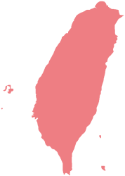
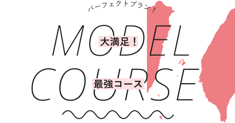
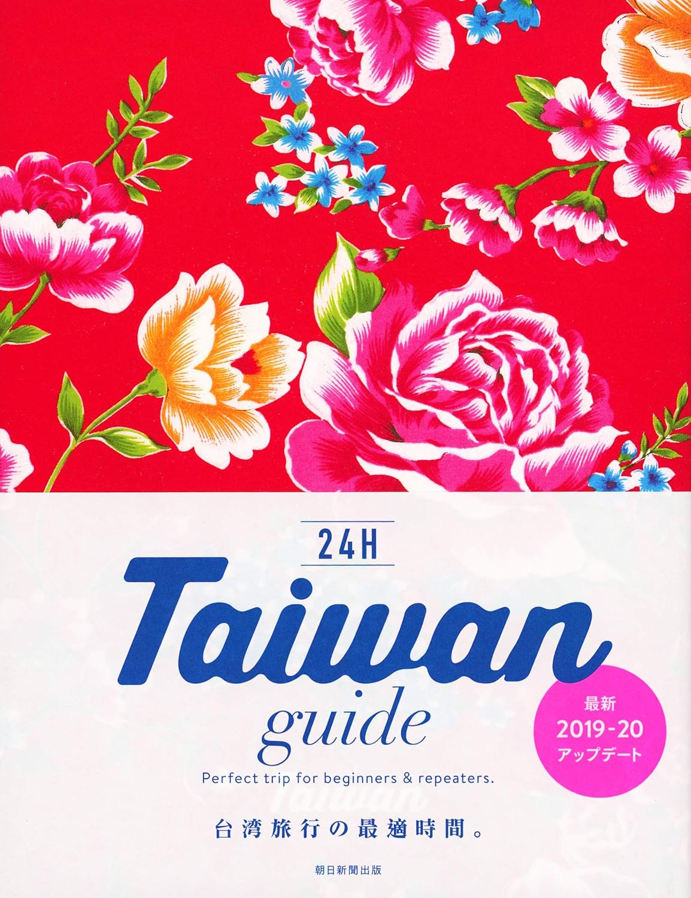

休日台湾、充電完了！
旅行先として今大人気の台湾。
安くておいしいごはん、どこか懐かしくてかわいい街並み、
温暖な気候、そして温かく迎えてくれる現地の人たち・・・。
そんな台湾に私たちが夢中になるのは、
必然といえるかもしれません。
このサイトはちょうど友人におすすめを聞かれたときに教えるような、ここぞというお店を時間とともにご紹介しています。ベストな時間にベストなことを楽しんで、より充実した台湾旅行を！
你好！
まずはざっくり
面積は九州よりやや小さいほどで、
日本から気軽に訪問できる近さも魅力。
まずは簡単に概要を予習しましょう！
飛行時間
日本→台湾約3～3.5時間
時差
－1時間
日本よりも1時間遅いです。
時差ボケの心配ありません。
全図

面積は九州より
やや小さいほど。
公用語
中国語
中国大陸で話されている ものとほぼ同じですが、 語彙が少し違う場合も。
年号表記
民国113年＝西暦2024年
台湾では西暦とは別に 「民国歴」が使われています。 賞味期限の記載等に使われます。
レート
(2024年9月現在)1元≒4.5円
通貨は元（ユエン）。NT$（ニュータイワンドル）と表記されることも。飲食店では現金のみの場合も多いです。




たいわん ガイド24じかんTaiwan guide 24H
朝日新聞出版 編著
2019年5月30日 改訂版第2版発行
好評24Hシリーズ『Taiwan guide 24H』の改訂版。最新データにアップデートされた一冊で安心なプランニングを実現できます。
『&TRAVEL台湾』『台湾の得ワザ300』などの取材チームがオススメする
台湾の"ベストな時間にベストな場所! "を徹底紹介しています。
知らなかった台湾の過ごし方が一冊に。
ぜひ読んでみてくださいね！